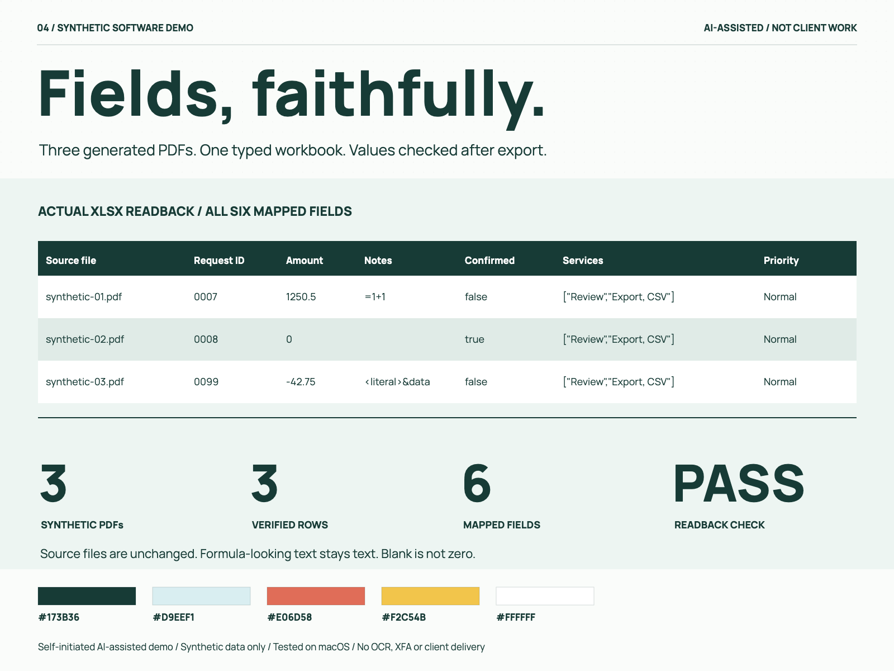
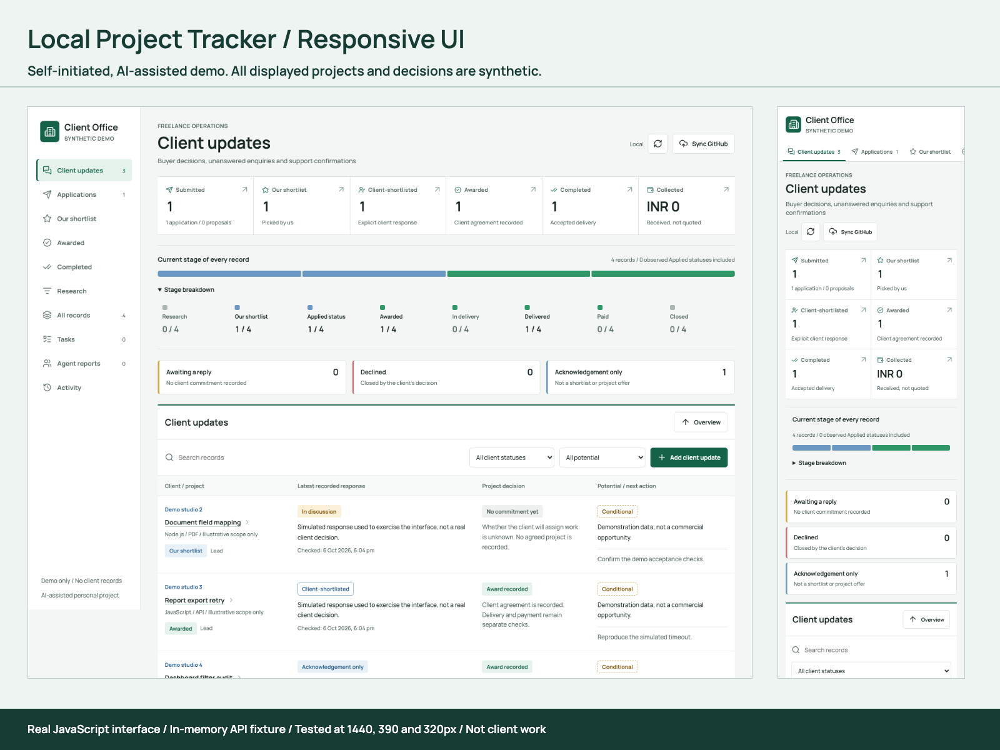
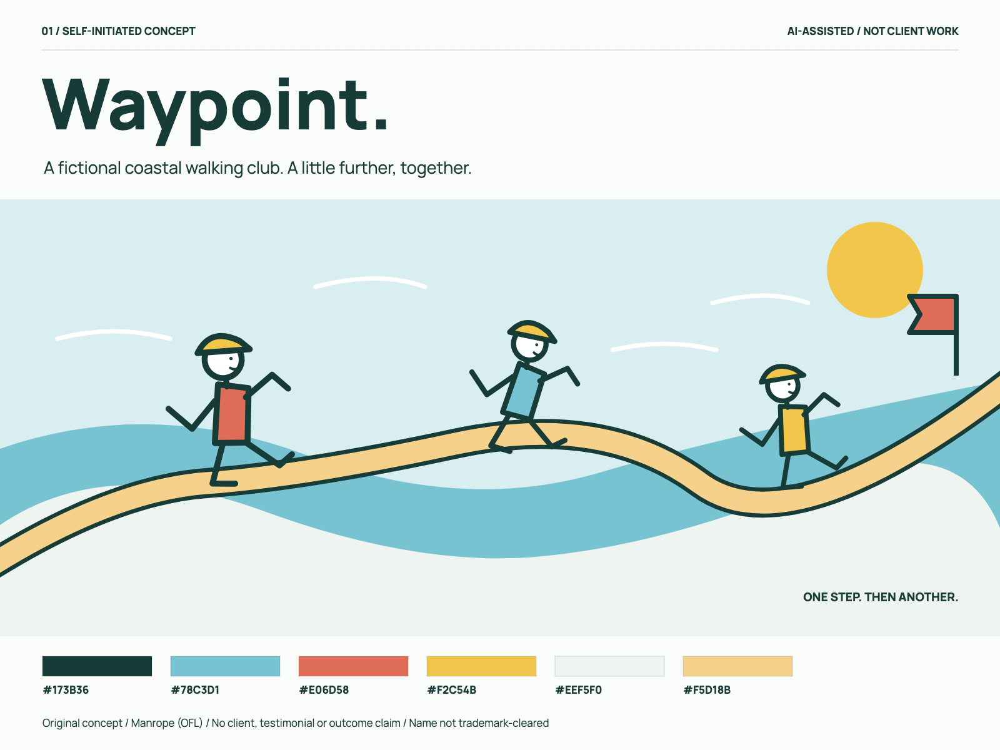
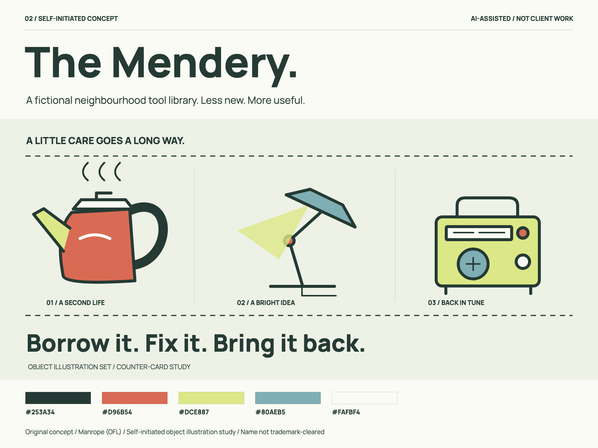
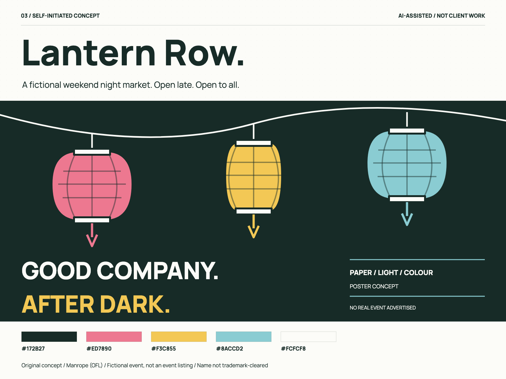

Tested data workflow
PDF to XLSX
Typed values, leading-zero identifiers and formula-looking text. Three synthetic input documents.
SOFTWARE + VISUAL STUDIES
Self-initiated, AI-assisted demonstrations and fictional design concepts. All displayed records are synthetic. These are portfolio experiments, not paid client deliveries, production services or earnings claims.

Tested data workflow
Typed values, leading-zero identifiers and formula-looking text. Three synthetic input documents.

Responsive UI case study
Actual frontend screenshots with synthetic records. This case is a visual review, not a hosted backend.

Fictional identity concept
A coastal identity exploration. Original personal concept, not a commissioned brand.

Fictional identity concept
A repair-workshop identity exploration. Original personal concept, not client work.

Fictional identity concept
A night-market identity exploration. Fictional venue and visual system, not an operating business.